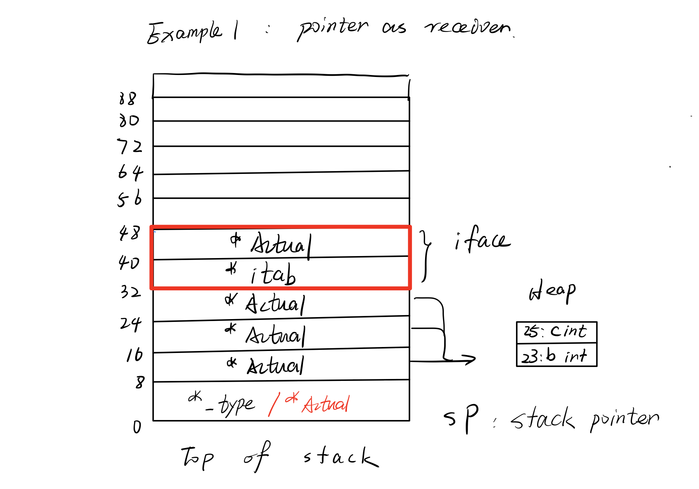
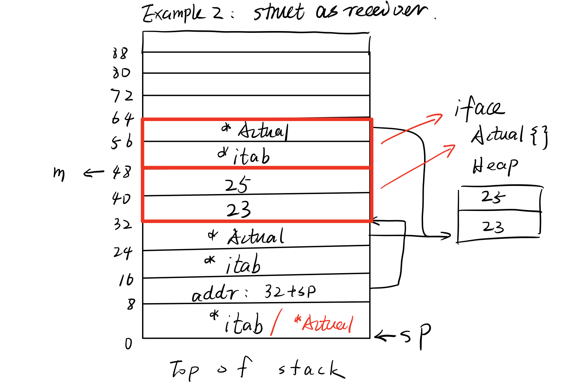

程序为了结构化层次化及逻辑的清晰，一般会分成多个子组件。接口是程序不同组件之间进行交互的一种设施。作为边界沟通的工具，接口既可以作为跨越边界的桥梁，也可作为边界定义本身（分离，解耦）。由于语言本身的简洁与灵活，golang中interface的作用更偏向于第二点；C#，Java的接口或者C++中的“软接口”则更偏向于第一点。区分这一点的意义对笔者来说尚不明朗；区分的观点来自SICP中的数据抽象。
虽然直觉上讲“组件”之间似乎理所当然地是平级关系，但接口也可作为上下级抽象的沟通设施，即跨越抽象屏障的工具。在实践中对这一点的分有助于程序结构、逻辑的清晰。
总而言之，接口作为一种组织、抽象工具，主要为程序的模块化和层次化服务。最终目的是清晰逻辑，降低复杂度，便于开发及后续维护。理论上所有对接口的使用都应以此作为根本关切。
go语言中的接口，即interface，可看作一种特殊的结构体（struct）。定义形式如下，类似struct：
xxxxxxxxxxtype <name> interface { <required method 1> <required method 2> ...}interface类似一种实现模板。任何实现了定义中全部方法的struct均可被转换成该interface类型变量，且无需显式声明实现了哪些interface。go没有对struct实现interface的数量做出限制。在源码中go语言的interface分为了两类：
runtime.iface（interface）：有实现方法要求的非空interfaceruntime.eface（empty interface）：无实现方法要求的空interface其中所有go对象均可被转换为空interface（eface，interface{}）；这一特性使得interface{}经常被用作泛型模拟。因其在go中应用广泛，故使用了额外类型来表示。两种interface的实现如下：
xxxxxxxxxx// src/runtime/runtime2.go Line 203type iface struct { tab *itab data unsafe.Pointer}type eface struct { _type *_type data unsafe.Pointer}首先分析eface。_type的实现如下：
xxxxxxxxxx// src/runtime/type.go Line 31type _type struct { size uintptr ptrdata uintptr // size of memory prefix holding all pointers hash uint32 tflag tflag align uint8 fieldAlign uint8 kind uint8 // function for comparing objects of this type // (ptr to object A, ptr to object B) -> ==? equal func(unsafe.Pointer, unsafe.Pointer) bool // gcdata stores the GC type data for the garbage collector. // If the KindGCProg bit is set in kind, gcdata is a GC program. // Otherwise it is a ptrmask bitmap. See mbitmap.go for details. gcdata *byte str nameOff ptrToThis typeOff}_type是go中类型的运行时表示，在这里无需了解全部细节。当一个对象被赋予空interface类型变量时，_type字段将会存储实际对象的类型信息；eface的第二个成员data指针则储存实际对象的内存地址。因eface无方法定义，故无其他字段用于方法定义的存储。
相较于eface，iface有更复杂的结构。第一个成员的类型itab的实现如下：
xxxxxxxxxx// src/runtime/runtime2.go Line 857type itab struct { inter *interfacetype _type *_type hash uint32 // copy of _type.hash. Used for type switches. _ [4]byte fun [1]uintptr // variable sized. fun[0]==0 means _type does not implement inter.}可以看到相比eface，iface在类型相关的部分多出了三（四）个字段。第一个字段inter用于存储interface包含的方法信息；_type同eface；hash用于快速比较interface类型，可以看到_type中也存在相同字段，它们的作用是一样的；倒数第二的四字节占位字段用于8字节对齐；最后的fun用于储存实际对象的函数指针，用于运行时的动态派发（dynamic dispatch）。同时iface依然拥有data字段来指向实际对象。
类型转换和调用方法时的动态派发是使用interface时的两个常见过程。下面结合两个例子对它们的执行做出分析。
（对空interface的转换分析读者可自行尝试。本文只给出iface的分析）
实例一：指针作为receiver时
实例代码如下：
xxxxxxxxxxpackage maintype Abstract interface { testFunc()}type Actual struct { b int c int}func (t *Actual) testFunc() { var a int = 1 a = a + t.b + t.c // Only used to shut the compiler println(a) // Only used to shut the compiler}func main() { var m Abstract = &Actual{b:23, c:25} // Line 19 m.testFunc() // Line 20}在这里我们创建了一个interface Abstract，它有一个名为testFunc的方法。Actual结构体实现了这个interface，且receiver为*Actual类型。
通过命令go tool compile -N -l -S main.go > main.asm， 我们生成了汇编代码并存储到当前目录下的main.asm文件。内容如下（节选）：
xxxxxxxxxx ...... 0x001d 00029 (main.go:19) LEAQ type."".Actual(SB), AX 0x0024 00036 (main.go:19) MOVQ AX, (SP) 0x0028 00040 (main.go:19) CALL runtime.newobject(SB) 0x002d 00045 (main.go:19) MOVQ 8(SP), AX 0x0032 00050 (main.go:19) MOVQ AX, 16(SP) 0x0037 00055 (main.go:19) MOVQ $23, (AX) 0x003e 00062 (main.go:19) MOVQ 16(SP), AX 0x0045 00069 (main.go:19) MOVQ $25, 8(AX) 0x004d 00077 (main.go:19) MOVQ 16(SP), AX 0x0052 00082 (main.go:19) MOVQ AX, 24(SP) 0x0057 00087 (main.go:19) LEAQ go.itab.*"".Actual,"".Abstract(SB), CX 0x005e 00094 (main.go:19) MOVQ CX, "".m+32(SP) 0x0063 00099 (main.go:19) MOVQ AX, "".m+40(SP) 0x0068 00104 (main.go:20) MOVQ "".m+32(SP), AX 0x006f 00111 (main.go:20) MOVQ 24(AX), AX 0x0073 00115 (main.go:20) MOVQ "".m+40(SP), CX 0x0078 00120 (main.go:20) MOVQ CX, (SP) 0x007c 00124 (main.go:20) CALL AX ......go语言在编译过程中并没有生成实际汇编代码的步骤。上述生成的是架构独立的伪汇编代码。这种设计方便了go语言编译器的bootstrap，同时也降低了汇编的阅读难度（无需考虑架构细节）。这里呈现的汇编代码精简掉了与执行逻辑关系不大的步骤和一些临时量的命名。
代码中的(A~Z)(A~Z)为寄存器，$(0~9)+为数值常量， (0~9)+((A~Z)(A~Z))为寄存器存储的地址+偏移（字节为单位）。以上代码片段中指令的操作单位均为8字节（指令结尾的q意为quadword，64-bit）。MOVQ可理解为在操作时解引用地址（dereference）；LEAQ可理解为只处理原始数据（即地址）。
以下开始按步分析执行。首先创建一个结构体Actual对应的_type对象并将其地址放到AX寄存器中；MOVQ将地址放到栈顶（SP为固定存储栈顶地址的寄存器，Stack Pointer）；CALL调用newobject函数，该函数接收一个_type类型的参数，在堆上创建对应类型的实际对象，并返回创建对象的地址。这里创建了一个Actual结构体的实例，并将地址放在SP+8的位置（函数返回值会按序存储在参数后的栈位置中）。
下面两行（0x002d，0x0032）将Actual的地址复制到了SP+16的位置。之所以有这一复制操作是因为go语言默认拷贝赋值，在实例中Actual对象的地址被赋给了Abstract接口变量，这个过程可类比将一个指针赋给另一个指针变量，左指针储存的地址会拷贝到右侧指针里。MOVQ $23, (AX) 将Actual的第一个字段赋值23，MOVQ $25, 8(AX)将第二个字段赋值25。到目前完成了Actual结构体的创建及初始化。
接下来Actual结构体的地址被复制到了SP+24的位置。LEAQ go.itab.*"".Actual,"".Abstract(SB), CX创建了一个关联Actual结构体类型和Abstract接口类型的itab对象并将它的地址存放在CX寄存器中。下一步itab对象的地址被放到了SP+32，同时Actual结构体的地址被复制到了SP+40。现在可以看到SP+32和SP+40这两个位置正好构成了一个iface结构体，也就是接口变量m。到目前完成了类型转换和赋值。可以看到对于指针作为receiver的结构体，整个过程主要是指针的复制。
下一步是调用testFunc函数的动态派发。事实上本例在一般情况下会被编译器优化为直接调用，但笔者禁用了优化选项以便更好展示动态派发过程。首先将itab的地址放入AX寄存器，通过itab起始地址+24字节的偏移获取fun字段的起始地址。因为本例中接口和结构体对象均只有一个成员函数，fun字段的第一个元素即为Actual结构体的testFunc函数指针。该函数指针被存入AX寄存器，同时调用testFunc所需的参数（即指向Actual结构体的指针）通过CX被复制到栈顶。最后调用AX，即testFunc，完成全部执行。获取itab的fun字段并查找函数指针为动态派发的主要过程。
最终栈及堆的使用示意图如下：

示例二：结构体作为receiver时
示例代码如下：
xxxxxxxxxxpackage maintype Abstract interface { testFunc()}type Actual struct { b int c int}func (t Actual) testFunc() { var a int = 1 a = a + t.b + t.c println(a)}func main() { var m Abstract = Actual{b:23, c:25} // Line 19 m.testFunc() // Line 20}汇编如下：
xxxxxxxxxx ...... 0x0025 00037 (main.go:19) MOVQ $23, 32(SP) 0x002e 00046 (main.go:19) MOVQ $25, 40(SP) 0x0037 00055 (main.go:19) LEAQ go.itab."".Actual,"".Abstract(SB), AX 0x003e 00062 (main.go:19) MOVQ AX, (SP) 0x0042 00066 (main.go:19) LEAQ 32(SP), AX 0x0047 00071 (main.go:19) MOVQ AX, 8(SP) 0x004c 00076 (main.go:19) CALL runtime.convT2Inoptr(SB) 0x0051 00081 (main.go:19) MOVQ 16(SP), AX 0x0056 00086 (main.go:19) MOVQ 24(SP), CX 0x005b 00091 (main.go:19) MOVQ AX, "".m+48(SP) 0x0060 00096 (main.go:19) MOVQ CX, "".m+56(SP) 0x0065 00101 (main.go:20) MOVQ "".m+48(SP), AX 0x006c 00108 (main.go:20) MOVQ 24(AX), AX 0x0070 00112 (main.go:20) MOVQ "".m+56(SP), CX 0x0075 00117 (main.go:20) MOVQ CX, (SP) 0x0079 00121 (main.go:20) CALL AX ......同上，删去了无关紧要的细节。鉴于例1中已有执行的详细分析，这里的解析会略去一部分细节。
本例中首先在栈上SP+32的位置初始化了Actual结构体，并创建了与Actual结构体和Abstract接口关联的itab对象。itab对象和Actual结构体的地址分别被复制到栈顶和栈顶+8的位置。接下来代码调用了函数runtime.convT2Inoptr（实现在此）。它接受一个itab指针和一个unsafe指针，将unsafe指针指向的对象拷贝到堆上并以拷贝后对象的地址作为data字段，itab作为tab字段构建一个iface对象返回。鉴于iface结构体大小为16个字节（两个指针字段），该函数返回后栈上SP+16到SP+24的位置即为新构建的iface对象。这里可以看出有对Actual结构体对象的拷贝操作，而例一中没有。这是因为go语言默认赋值均为拷贝（类似C++），将Actual结构体赋给接口变量m便执行了一次拷贝。所以Abstract接口变量m指向的实际对象是我们创建的Actual结构体的一个在堆上的拷贝。
下一步新建的iface对象被从SP+16的位置拷贝到了SP+48的位置，及最终变量m的地址是SP+48。至此便完成了创建和类型转换的操作。
下面是源代码第20行的动态派发过程，与例一基本一致，不再赘述。最终的栈存储示意图如下：

以后再说 先去摸鱼